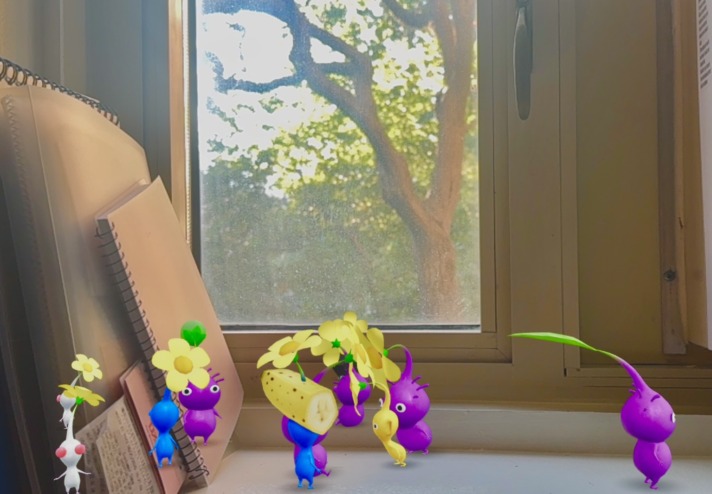
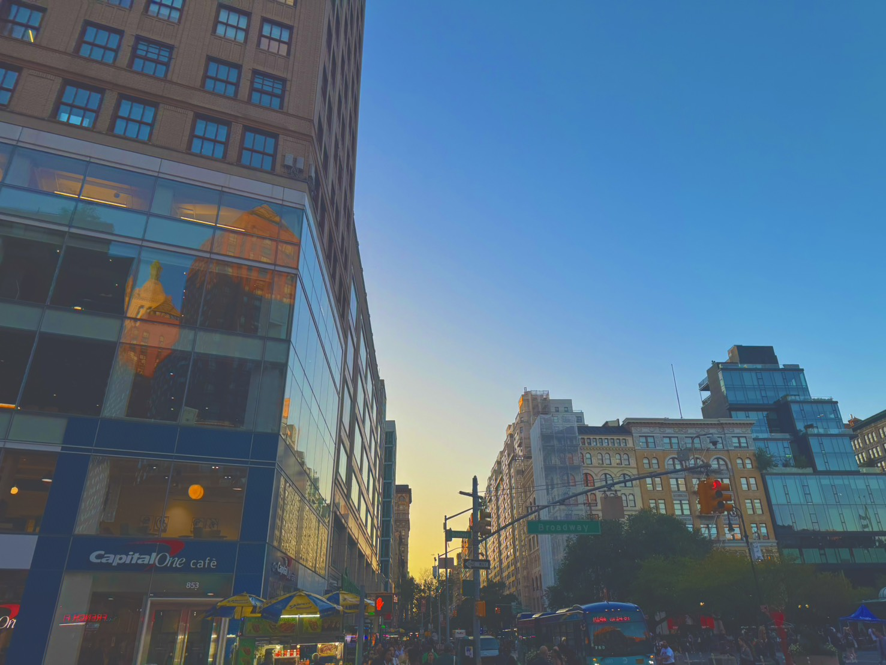

On the way to Class
Zoe's Observational Walk
September 14 , 5 PM...
Pikmin wants to go outside...
The afternoon light poured through the bedroom window. The Pikimin were eager to go outside and enjoy the perfect weather.

Stepping into the Day
Outside, the weather was even better than it appeared from the window. The city was unusually bright beneath the afternoon sun.

An Unexpected Encounter!
Not far away from home, I came across a group of Pikmin! :0

Searching for Shade
The sunlight had become intense. A group of Pikimin was spotted gatherin beneath the shadow of a parked car,taking shelter from the cloudless sky.

Continuing the Walk...
We kept walking...
Time to Go Home
By the time the sky began to turn orange and yellow, we had been out for hours. After a long day of wandering, it was finally time to head home.
